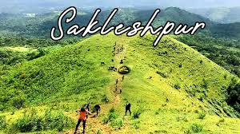
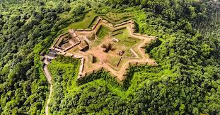

By :Prajath 8 A
Posted on:February 24,2026

Sakleshpur is a mesmerizing hill station located in the Western Ghats of Karnataka. The town is uniquely positioned on the Bangalore-Mangalore highway and is famous for its vast slopes covered with coffee, tea, and spice plantations.
The town has its own railway station (SKLR), which is part of the scenic Bengaluru-Mangaluru route. Recently, the challenging Sakleshpur-Subramanya Ghat section was fully electrified, paving the way for faster trains like the Vande Bharat. Visitors can also easily reach the town by bus or private vehicles via the well-maintained NH75 highway.

Sakleshpur is part of the Malnad region, known for its distinct and delicious cuisine. Must-try local dishes include:
While Sakleshpur is beautiful year-round, the best time to visit is from October to March for pleasant weather. The monsoon season (July to September) is ideal for those who want to see the waterfalls, like Manjehalli Falls, in their full glory.
Read more about our village: Click here